Yang sering terjadi
Buku tebal dibeli. Jadwal disusun. Anak duduk, lalu menangis. Orang tua pulang dengan rasa bersalah.
Anak tidak butuh lebih banyak materi. Ia butuh satu langkah kecil yang bisa selesai hari ini.
Lembar kerja siap cetak yang dipilih sesuai kesiapan, bukan umur. Cukup 10–15 menit sehari, bisa dipakai begitu selesai diunduh.
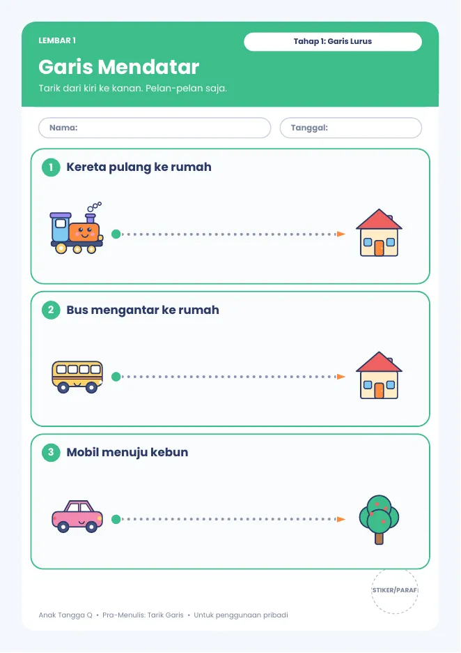
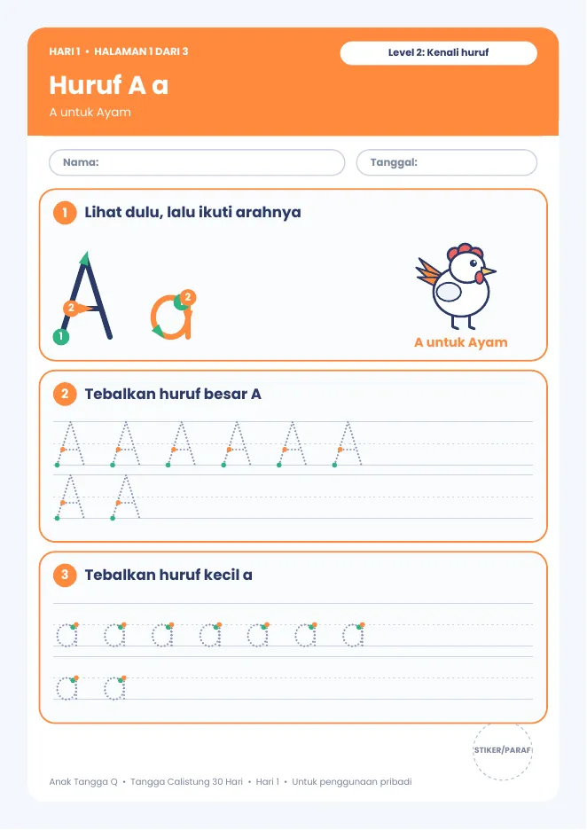
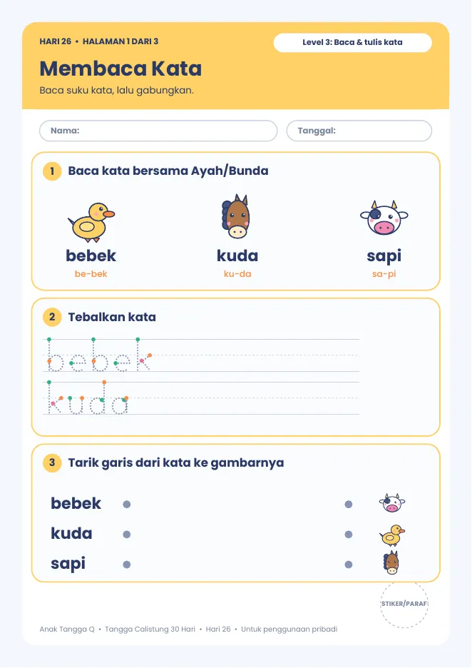
Buku tebal dibeli. Jadwal disusun. Anak duduk, lalu menangis. Orang tua pulang dengan rasa bersalah.
Satu lembar. Sepuluh menit. Anak yang memilih. Berhenti sebelum bosan, lanjut besoknya.
Anak seumur sama bisa sangat berbeda kesiapannya. Lihat apa yang sudah bisa ia lakukan hari ini, lalu pilih levelnya. Naik kalau sudah siap, bukan karena umurnya.
Tangan masih belajar memegang pensil. Mulai dari garis, lengkung, dan lingkaran.
Mulai dengan Pra-Menulis Level 2Sudah mau menebalkan huruf dan mengenal bunyinya. Satu huruf bergambar sehari.
Mulai dengan Calistung Level 3Sudah bisa membaca suku kata dan menulis banyak huruf. Pilih jalur Normal.
Mulai dengan CalistungMasih ragu? Tes 2 menit ada di 10 Lembar Gratis.
Ini halaman asli dari produknya, bukan ilustrasi. Klik halaman untuk memperbesar, geser untuk melihat yang lain.
Pra-Menulis · Level 1 · 45 halaman
Untuk tangan yang baru belajar memegang pensil. Garis lurus dulu, lalu lengkung, lingkaran, bentuk, dan jalan berkelok. Tiap garis punya tujuan kecil: kereta pulang ke rumah, siput menuju bunga.
Calistung · Level 2 dan 3 · 99 halaman
Satu huruf bergambar sehari, lalu angka dan suku kata sampai membaca kalimat pendek. Tiap lembar punya tiga langkah: lihat, tebalkan, tulis sendiri.
Hijaiyah · Pengenalan · 99 halaman
Setiap tulisan Arab disertai cara baca Latin dan artinya, jadi orang tua yang belum lancar pun bisa mendampingi. Pengenalan huruf, bukan pengganti guru mengaji.
Petualangan · Logika dan motorik · 71 halaman
Enam dunia petualangan, satu tangga per hari: labirin, jejak garis, pola, hubungkan titik, sudoku bentuk, dan cermin ajaib. Melatih fokus tanpa layar.
Kit Rutinitas · Pagi sampai malam · 35 halaman
Papan kegiatan yang bisa ditempeli kartu gambar. Anak melihat urutan harinya sendiri, jadi pagi tidak perlu diulang-ulang dengan perintah.
Gratis · Mulai di sini · 11 halaman
Contoh dari tiap level plus Tes 2 Menit untuk tahu anak cocok mulai dari mana. Cetak dan coba dulu sebelum membeli apa pun.
Contoh ditampilkan dengan kolom nama dan tanggal kosong, persis seperti saat dicetak.
Semua berupa PDF A4 yang langsung diunduh setelah bayar, dan boleh dicetak berulang untuk keluarga sendiri.
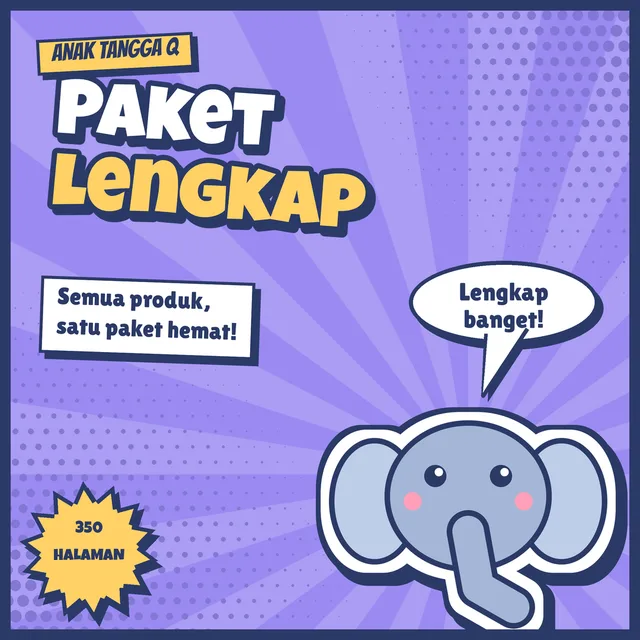
Lima produk sekaligus: Pra-Menulis, Tangga Calistung 30 Hari, Tangga Hijaiyah, Petualangan Tangga 60 Hari, dan Kit Rutinitas Si Kecil.
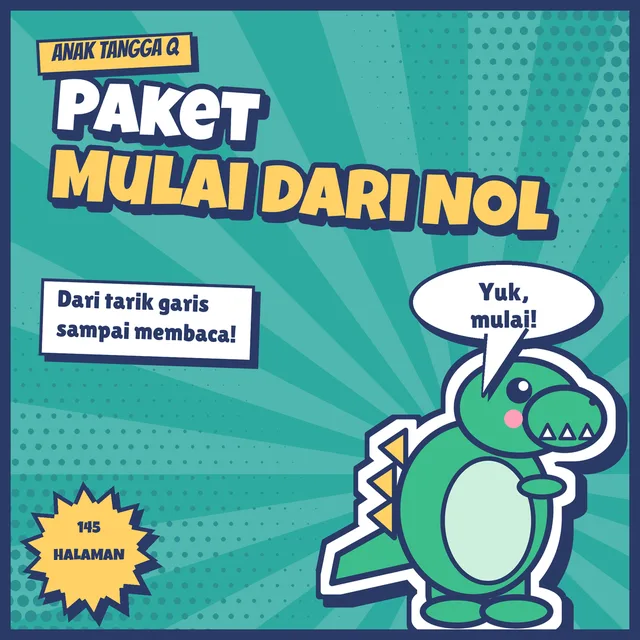
Pra-Menulis dan Calistung dalam satu paket. Hemat Rp 9.000 dibanding beli terpisah.
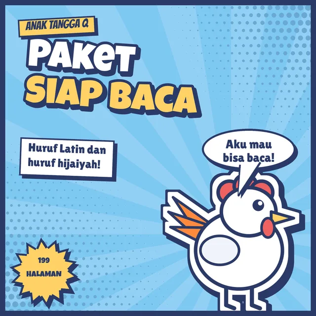
Calistung dan Hijaiyah dalam satu paket. Hemat Rp 13.000 dibanding beli terpisah.
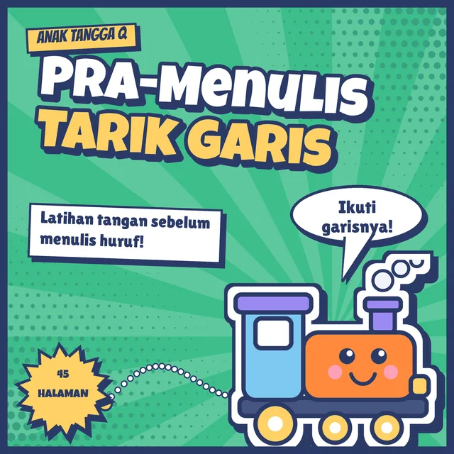
Lima tahap pelan-pelan: garis lurus, lengkung dan zigzag, lingkaran, silang dan bentuk, lalu jalan dan gabungan.
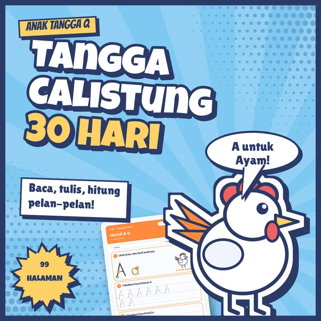
Huruf A–Z bergambar, angka, dan suku kata. Jalur Santai (1 halaman sehari) atau Normal (3 halaman sehari), plus halaman "Mulai dari Mana?".
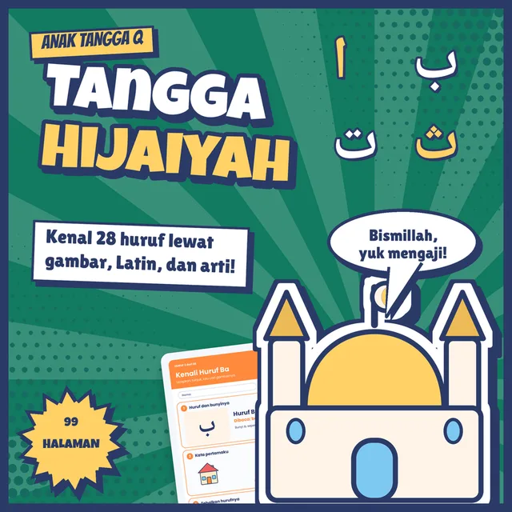
28 huruf, tiap huruf 3 halaman. Semua tulisan Arab ada cara baca Latin dan artinya, plus doa pendek dan sertifikat.
Untuk pengenalan dan pendamping orang tua, bukan pengganti guru mengaji.
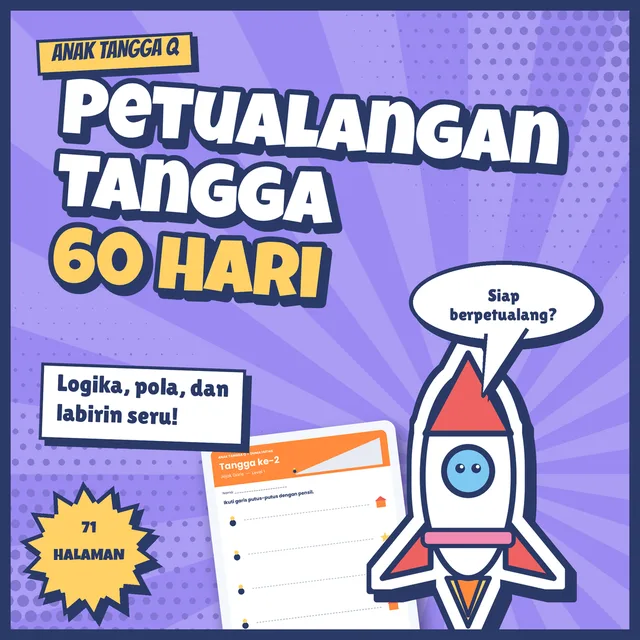
6 dunia petualangan: labirin, jejak garis, pola, hubungkan titik, sudoku bentuk, dan cermin ajaib.
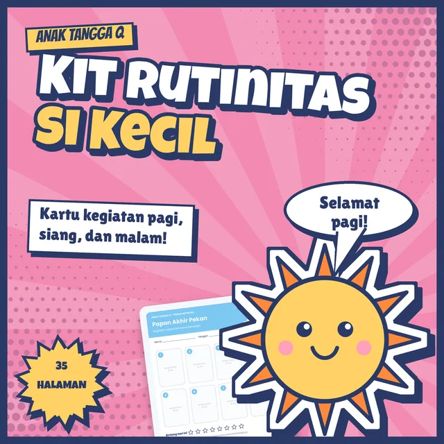
Papan pagi, siang, malam, 30 kartu kegiatan, Tangga Hebat, kartu perasaan, dan pelacak 30 hari.
Mulai dari 10 lembar gratis. Tes 2 menit di dalamnya menunjukkan anak cocok mulai dari Level 1, 2, atau 3.
PDF A4 langsung bisa diunduh dari Member Area Lynk.id setelah bayar. Cetak di rumah atau percetakan.
Cukup 10–15 menit. Tunjukkan sekali, lalu biarkan anak yang mencoba. Berhenti sebelum ia bosan.
Game calistung, hijaiyah, dan logika. Setiap hari satu anak tangga: tebak huruf, tebalkan dengan jari, kenal harakat, labirin, sampai membaca kata pertama.
3 hari pertama tiap tangga dan 3 level pertama tiap latihan gratis. Sisanya dibuka dengan kode dari pembelian.
Dua contoh gratis supaya kamu bisa melihat cocok atau tidak sebelum membeli versi lengkapnya.
Gratis, diunduh lewat Member Area Lynk.id.
Dulu aku memaksa anakku belajar. Hasilnya dia menangis, dan aku merasa gagal. Sampai aku coba satu hal: satu lembar, sepuluh menit, dan dia yang memilih. Sejak itu dia minta sendiri.
Anak Tangga Q lahir dari situ. Kami bukan psikolog dan bukan dokter. Kami orang tua yang belajar pelan-pelan, lalu merapikan semua lembar itu supaya bisa dipakai keluarga lain hari itu juga.
Saat ini fokus kami lembar kerja. Format lain menyusul pelan-pelan, dengan nama yang sama.
Lembar aktivitas, latihan garis, angka, dan huruf. Cetak, lalu mulai.
Sudah tersediaVideo pendek dan mini course. Orang tua menonton dulu, lalu memainkan bersama.
MenyusulBuku digital dan ebook panduan yang bisa dibaca di layar atau dicetak.
MenyusulWebinar untuk orang tua, dengan tanya jawab dan rekaman yang bisa diulang.
MenyusulAplikasi dan game edukasi ringan untuk menemani latihan tanpa layar berlebih.
MenyusulAlat peraga dan mainan edukatif yang bisa dipegang, dipindah, dan dicoba.
MenyusulTidak. Cetak lima halaman dulu. Kalau anak masih mau, baru tambah. Rutinitas kecil lebih penting daripada tumpukan kertas.
Itu wajar, tiap anak punya kecepatan sendiri. Mulai dari Level 1 (Pra-Menulis), atau ambil 10 Lembar Gratis dan lakukan Tes 2 Menit di lembar pertama. Naik ke level berikutnya kalau anak sudah siap.
Kami sengaja tidak memakai patokan umur. Anak seumur sama bisa sangat berbeda kesiapannya. Pilih dari tiga level: Level 1 baru belajar tarik garis, Level 2 sudah kenal huruf, Level 3 mulai baca dan tulis kata.
Paket Lengkap berisi 5 produk, 350 halaman, Rp 99.000. Paket Siap Baca berisi Calistung dan Hijaiyah, 199 halaman, Rp 55.000. Paket Mulai dari Nol berisi Pra-Menulis dan Calistung, 145 halaman, Rp 35.000.
Setelah bayar, file PDF langsung bisa diunduh dari Member Area Lynk.id. Untuk yang gratis, tidak ada biaya sama sekali.
Bisa, untuk anak dalam satu keluarga. File bisa dicetak ulang kapan saja.
Tidak. Produk kami mendukung latihan sehari-hari, bukan menggantikan penanganan profesional.
Coba ganti alat atau tempatnya. Krayon jadi spidol, meja jadi lantai. Kalau masih menolak, berhenti dulu dan coba lagi besok.
Cetak satu lembar. Coba 10–15 menit. Lihat reaksinya. Kalau cocok, lanjut. Kalau belum, tidak apa-apa.